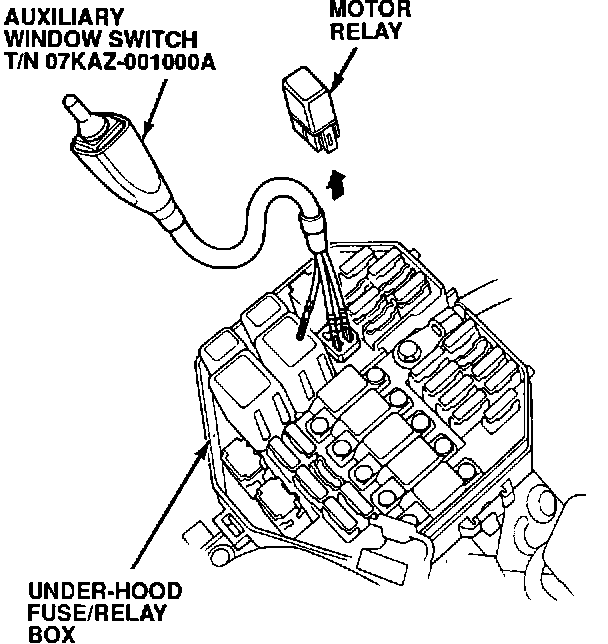

Solenoid Flushing

1. Remove the motor relay from the underhood fuse/relay box.
2. Insert the GRN and BLK terminals from the Auxiliary Window Switch, T/N 07KAZ-001000A (or use a remote starter switch), into the two front terminals of the motor relay connector.
3. Disconnect the four modulator solenoid connectors.
4. Connect the RED terminal from one solenoid to the battery positive (+) terminal with a remote starter switch. Connect the BLK terminal from the same solenoid to the battery negative (-) terminal with a jumper lead.
5. Bleed any high pressure fluid from the maintenance bleeder with the Bleeder T-wrench, T/N 07HAA-SG00101, then retighten the bleeder.
6. Press the auxiliary switch to run the pump. After the pump has run for about five seconds, press and release the remote starter switch three or four times to open and close the solenoid. Continue running the pump for about 30 seconds, then release the auxiliary switch and open and close the solenoid another three or four times.
7. Repeat steps 4-6 for the other three solenoids.
8. Reconnect the solenoids and the pump relay.
9. Connect the ALB Checker and turn the Mode Selector to "1." Start the engine and release the parking brake. Push the Start Test button on the ALB Checker.
10. While the ALB pump is running, place your finger over the top of the solenoid return tube in the modulator reservoir and check for leaks.
^ If the solenoid leakage has stopped, refill the modulator reservoir to the MAX level, and return the car to the customer.
^ If a solenoid is still leaking, go to Solenoid Replacement.